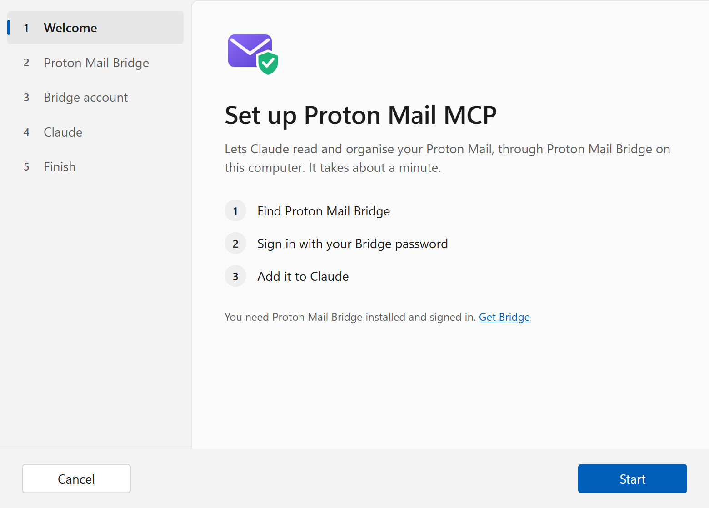

Let Claude handle your Proton Mail, safely.
Proton Mail MCP connects Claude to your mailbox through Proton Mail Bridge on your own computer. Ask Claude to find, read, sum up and tidy your mail. It can't send or permanently delete anything, and your password never reaches Claude.

Your inbox, with Claude's help
Talk to Claude about your mail the way you'd ask an assistant. Claude finds the messages, reads what you point it to, and keeps your folders in order.
Find and read
List folders and messages, search by sender, recipient, subject, text or date, and read a message in full, with its attachments listed.
Sum up
Ask what's new since Monday, what a long thread decided, or which invoices are still open. Claude reads, you decide.
Organise
Mark read or unread, star, move to a folder, add a label, or move to Trash, up to 50 messages at a time.
Stays in your control
No sending, no permanent deletion, and a cap on how much one session can change. Everything Claude does is something you asked for.
Tools: list_folders list_messages search_messages read_message mark_read mark_unread flag unflag move_message add_label trash_message.
Coming in 0.4.0: drafts, viewing images and saving attachments. See what's next.
How it works
Proton Mail Bridge, Proton's own app, decrypts your mail on your computer and offers it to mail programs. Proton Mail MCP is such a program, built for Claude, and it lives right next to Bridge.
Local only
Proton Mail MCP talks to Bridge on 127.0.0.1 and nothing else. Its connection to Bridge is TLS, verified against Bridge's own certificate, which setup pins.
Started by Claude
Claude Desktop and Claude Code start it when they need it. There's no service, no account and no server of ours in between.
Honest about Claude
The messages Claude reads become part of your conversation with Claude, and are processed by Anthropic like anything else you share with Claude.
Built to be trusted with your mail
Mail is personal. These limits are part of the program, with tests that fail if any of them is weakened.
Can't send mail
There is no tool that sends. When sending comes in 0.6.0, it will only send a draft you've seen, and only after you turn it on.
Nothing is deleted for good
"Delete" means move to Trash, where you can restore it. Permanent deletion isn't in the program at all.
Your password stays put
You type the Bridge password into setup, and it goes to Windows Credential Manager. Claude never sees it, and it's never in a config file.
Reading changes nothing
Reading a message never marks it read. Only "mark read" does that.
Mail is marked as untrusted
Every message is handed to Claude marked as written by its sender, so Claude can tell your requests from text in an email. Whatever a message says, the tools can only do the limited things on this page.
Open and signed
All code is on GitHub under the MIT license, and every finding of its security review is fixed. Windows builds are code-signed, and every release carries build provenance.
Set up in about a minute
No terminal, no config files. The setup wizard finds Bridge, checks it's really Proton's, and adds Proton Mail MCP to Claude.
Install
You need a Proton plan that includes Proton Mail Bridge (Mail Plus, Unlimited or higher), Bridge installed and signed in, and Claude Desktop or Claude Code.
Windows
- Installs for you only, no administrator rights
- Starts the setup wizard
- Updates keep your settings; nothing to set up again
…_windows_amd64_setup.exe, or …_arm64_… on Windows on ARM.
winget pending approval
winget install Codeby.ProtonMailMCP
The same installer, through Windows' package manager. Update with winget upgrade.
macOS and Linux
- Download the archive for your system from the release
- Run
proton-mail-mcp setupin a terminal - The setup wizard is coming in 0.5.0
What's next
Each version widens what Claude may do, and starts only once the one before is in daily use. Plans, not promises: the details are in the roadmap.
Windows installer
- Read, search and organise your mail
- Setup wizard, no terminal needed
- Updates that keep your settings
Drafts and attachments
- Claude writes drafts and replies, for you to send
- Claude can look at the images in a message
- Save an attachment to a folder you choose
- Remove labels
macOS and Linux
- The setup wizard on macOS and Linux
- Homebrew, and .deb and .rpm packages
- A Claude Desktop extension
Send on your command
- Sends only a draft you've seen
- Off until you turn it on
- Claude Desktop set to ask you before every send
Questions
Is this made by Proton or Anthropic?
No. Proton Mail MCP is an independent open-source project. It uses Proton Mail Bridge, Proton's own app, the way any mail program does, and Claude's standard way of adding tools (MCP).
Does my mail leave my computer?
Bridge decrypts your mail on your computer, and Proton Mail MCP only talks to Bridge, locally. But the messages you ask Claude to read become part of your conversation with Claude, which Anthropic processes. Ask Claude about the mail you're comfortable sharing with Claude.
Why do I need Proton Mail Bridge and a paid plan?
Proton Mail is end-to-end encrypted, so only Bridge, on your computer, can turn it into ordinary mail that programs can read. Bridge is part of Proton's paid plans.
Can Claude send email or delete my mail?
It can't send at all today. Deleting means moving to Trash, which you can undo. Permanent deletion isn't possible. Sending comes in 0.6.0, and it will only send a draft you've seen, after you turn it on.
What if a message tries to trick Claude?
Messages are given to Claude marked as untrusted content written by their sender, and the tools can only do the limited things above, at most 200 changes per session. You see what Claude does in the conversation.
How do I update or uninstall?
Run a newer installer, or winget upgrade: it replaces the program and keeps your settings. Uninstall from Settings → Apps. It removes Proton Mail MCP from Claude, and your settings and saved password only if you tick that box.
Something doesn't work
Run Proton Mail MCP Check from the Start menu: it tests each step and links to the fix. Every error has a section in the troubleshooting guide. Still stuck? Open an issue.